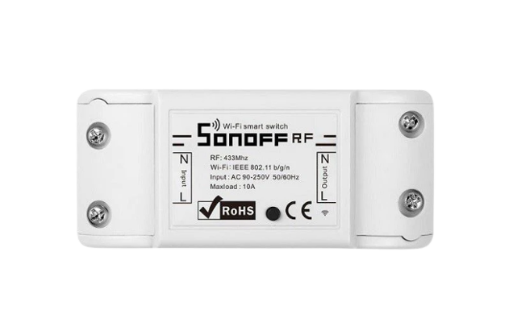

Instalação de interruptor inteligente
Informações do Video
A praticidade e a comodidade que um interruptor inteligente proporciona são sempre pontos de destaque - ainda mais quando ele está alinhado e integrado com outros mecanismos que promovem a automação residencial que, cada vez mais, vem ganhando espaço nos lares de algumas famílias. Basicamente, para criar uma automação residencial, você só precisa de aparelhos elétricos que se conectam com a internet - como é o caso de um interruptor inteligente - e um objeto que fará a coleta e a troca de informações entre os dispositivos. Para quem está em busca de fazer uma automação em casa, uma ótima opção é integrar com as assistentes virtuais um interruptor inteligente. Com isso, será possível ligar ou desligar qualquer aparelho que esteja conectado nele utilizando apenas o sinal de internet.
Ferramentas para Instalação
Interruptor Inteligente

Alexa

Chave de fenda

Celular

Cabo de Extensão
Sonoff
